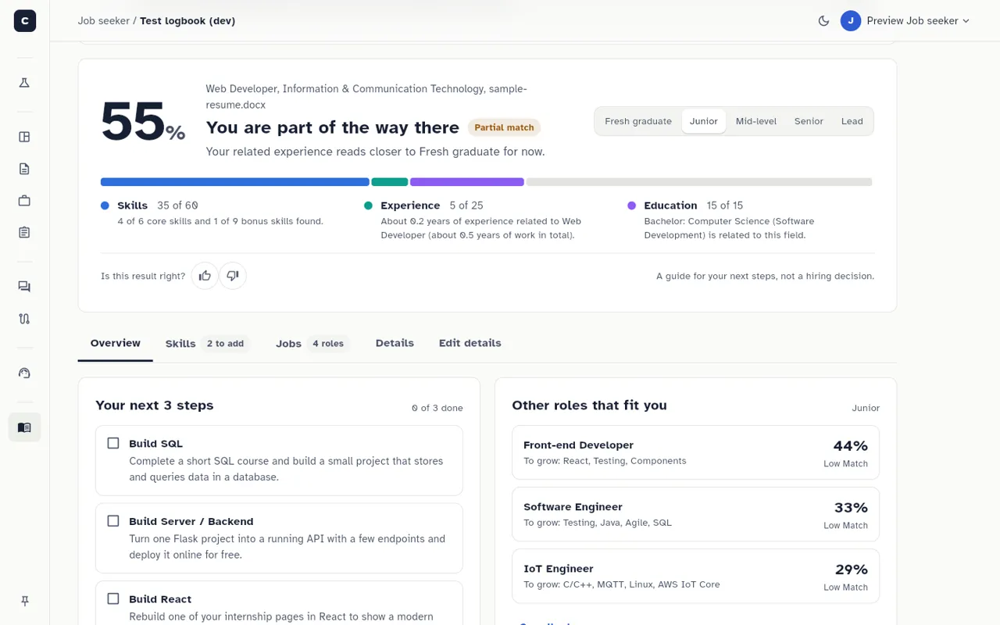
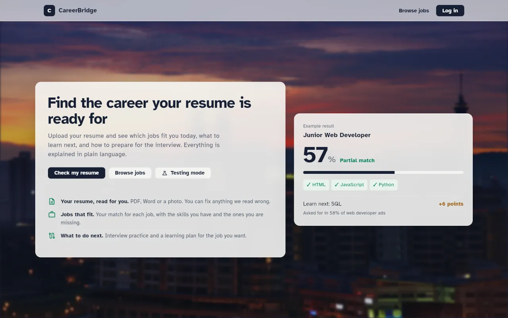
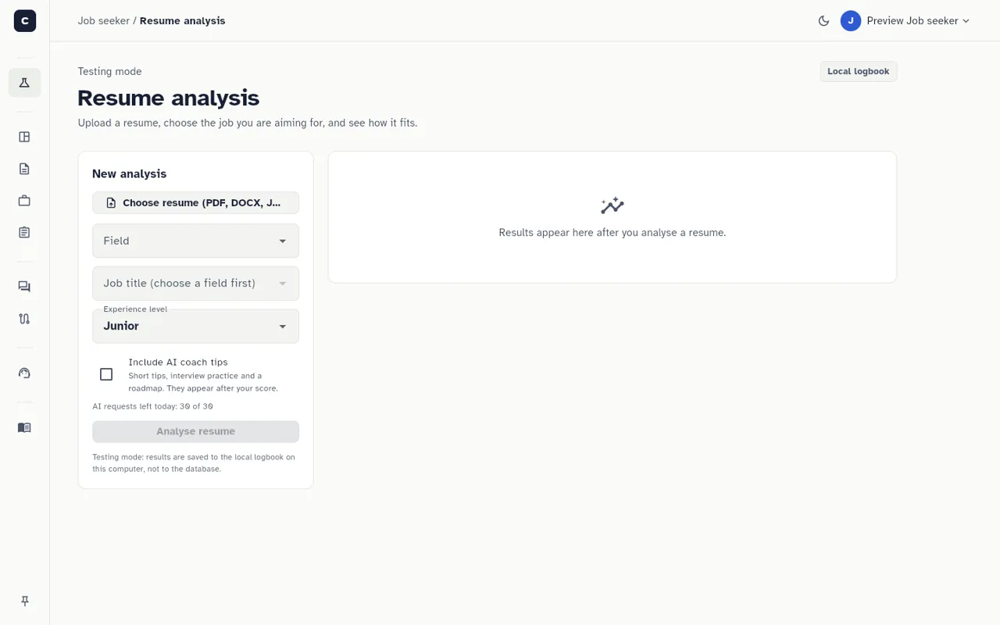

CareerBridge AI
A career and recruitment platform for job seekers, recruiters and admins in Malaysia and Singapore.
- Reads a PDF, Word or photo resume and turns it into a profile.
- Scores the fit for a chosen job and level: skills 70%, experience 20%, education 10%.
- A scikit-learn model suggests a career direction, and an LLM writes short advice.
Flutter, FastAPI, Supabase, scikit-learn, DeepSeek


